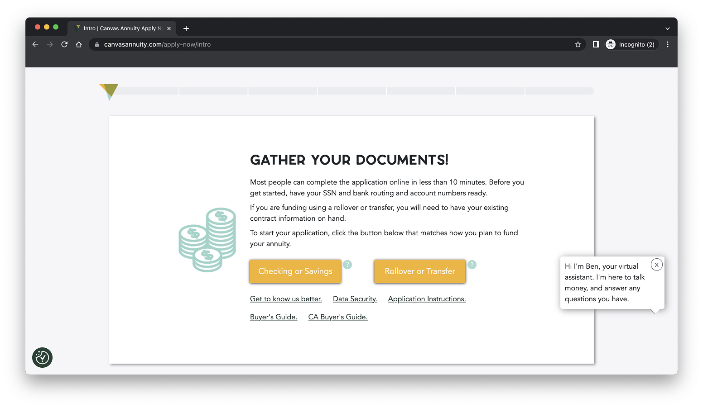
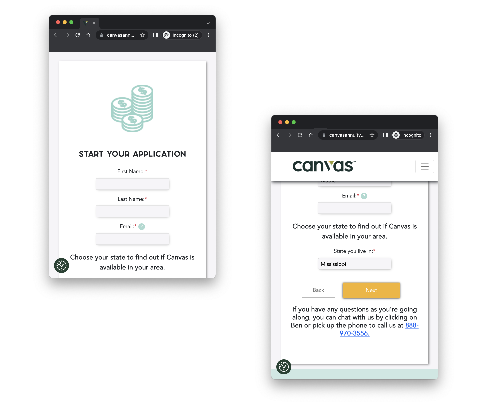
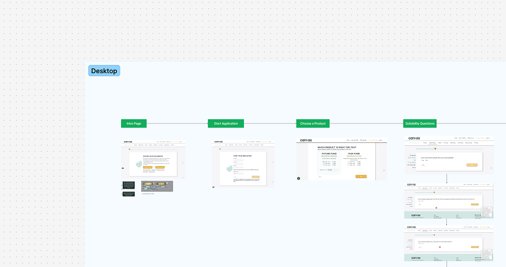
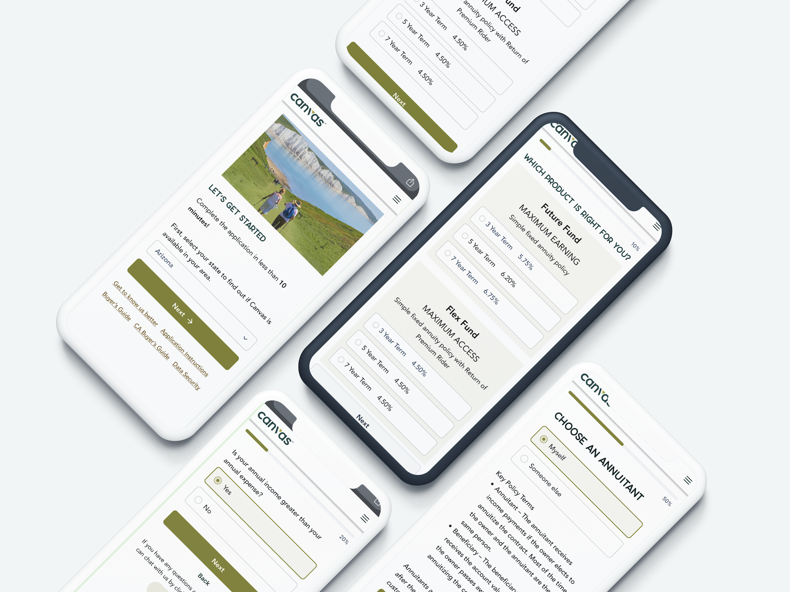

Overview
Canvas Annuity required a UI & UX review to increase the conversion rate of form submissions to initiate the annuity-buying process.
About the Project
For this effort I leveraged marketing emails, funnel metrics, client demographics, and further specific Google Analytics metrics.
Canvas Annuity already had a brand established, though there was an opportunity to understand where they stood amongst their competitors, what their target demographic values, and current user behavior to create an enhanced user experience aimed at streamlining the annuity-buying process.
Current State - UI/UX Annotations
Desktop
For the initial review, I documented the enhancements they could make based on heuristic and overall design principles. Armed with the knowledge of their target demographics, I was able to point out enhancements geared toward speaking to that market segment.
Click to see a snippet of the documentation process ↓
{kind=link}

{kind=link}
Mobile
Similarly, the mobile experience had its own challenges. Mobile experiences are in a lane of their own and follow a few different guidelines from a desktop experience.
Click to see a snippet of the documentation process for mobile ↓
{kind=link}

{kind=link}
Workflow Updates
Enhancements at a UI level creates beautiful mockups, but I knew we needed to analyze the workflow from a holistic perspective. I spent time looking through funnel flows, hotspots, user drop-offs, and leveraged marketing knowledge to provide opportunities to the workflow.
This led to a reorganization of steps within the workflow to increase the number of submissions. Some of those enhancements included: moving steps around, cutting down on content to simplify the experience, and reorganizing information at a page-level to flow better together.

Figjam outlining the workflow to identify opportunities.Redesigned Mockups
To complete this effort, I redesigned the main workflow to incorporate their brand colors, design principles, and all the individual recommendations I called out. The output is a clearer process that intuitively guides the user to completing the process and feeling good about their experience.
Apart from handing over a complete output of mockups, I created a deck with explanations of why changes were made and what development specs can be used to achieve the same design.

The mobile designs were updated to maximize the use of space and better incorporate their brand into every single element.
